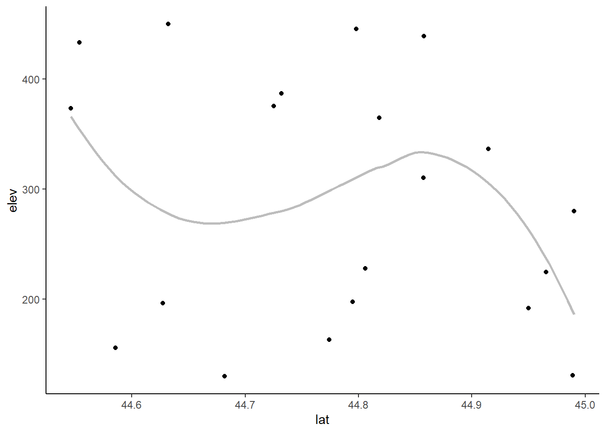
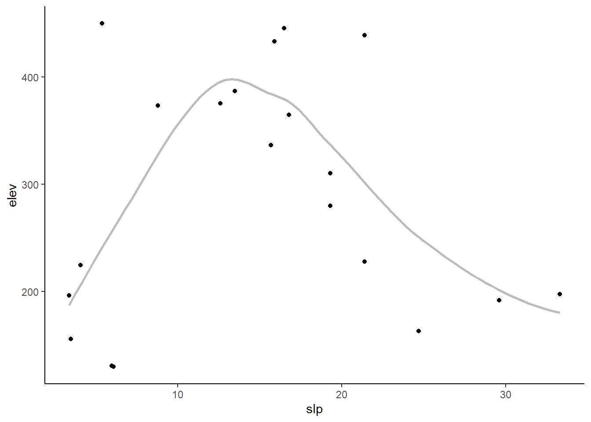
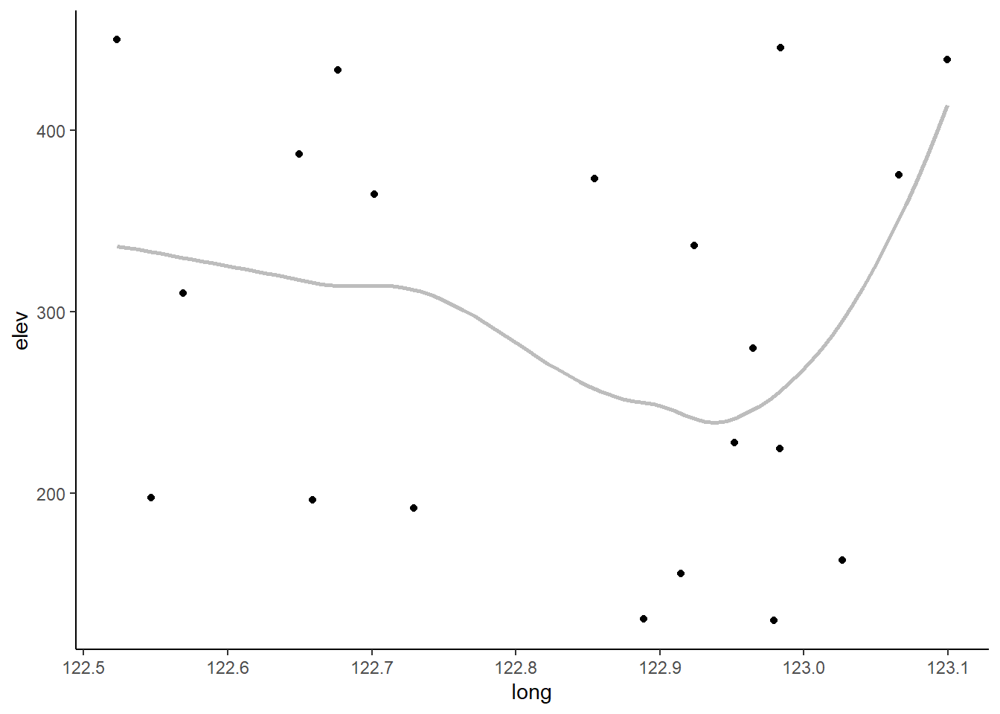
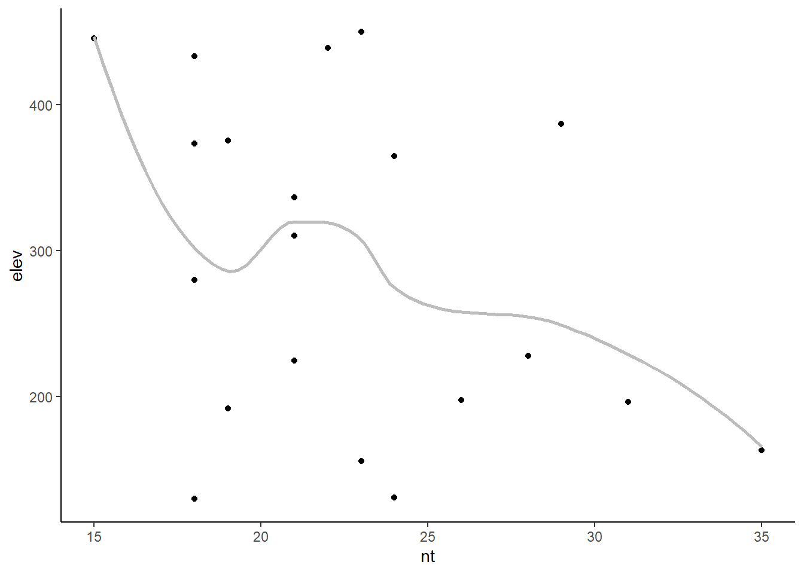
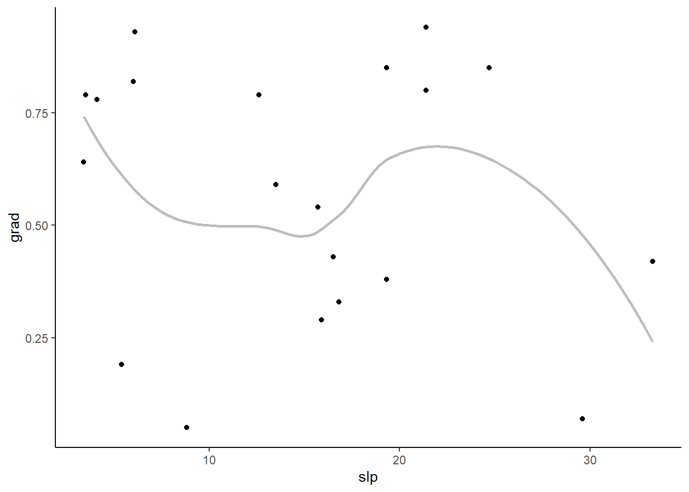
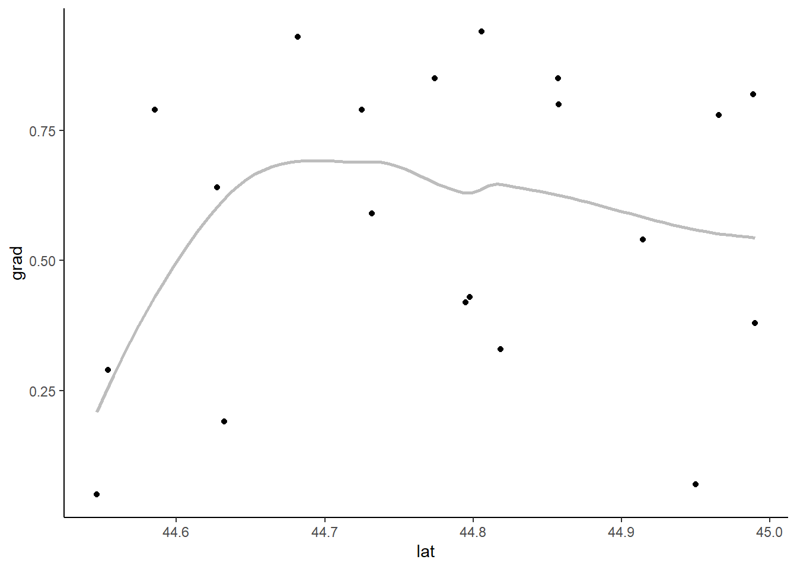
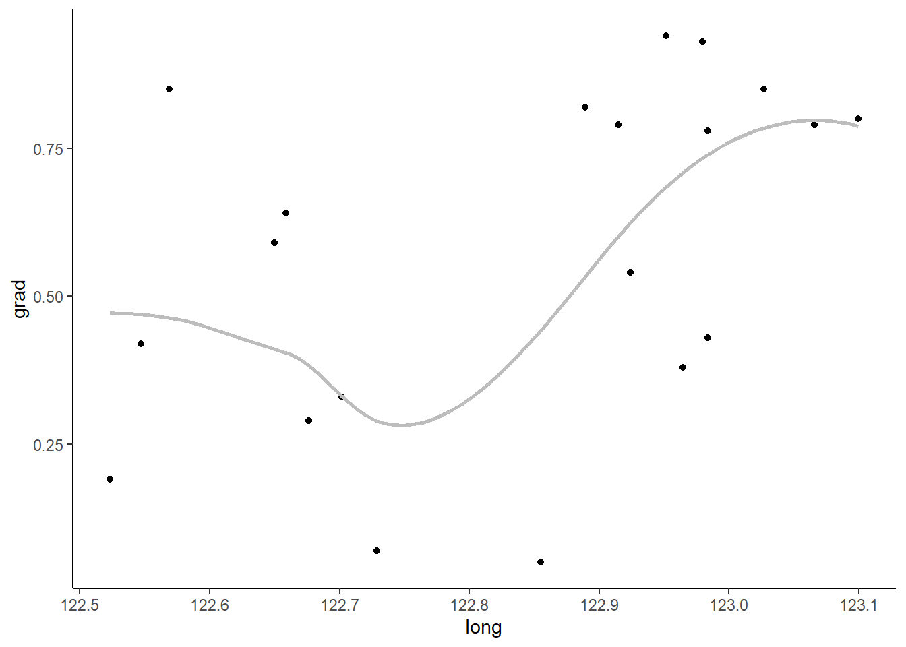
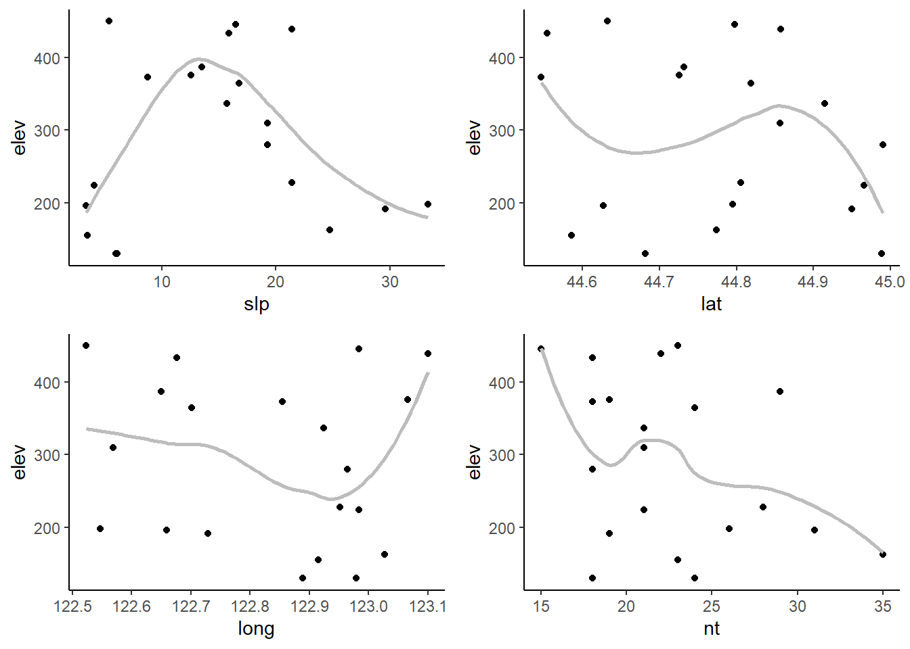
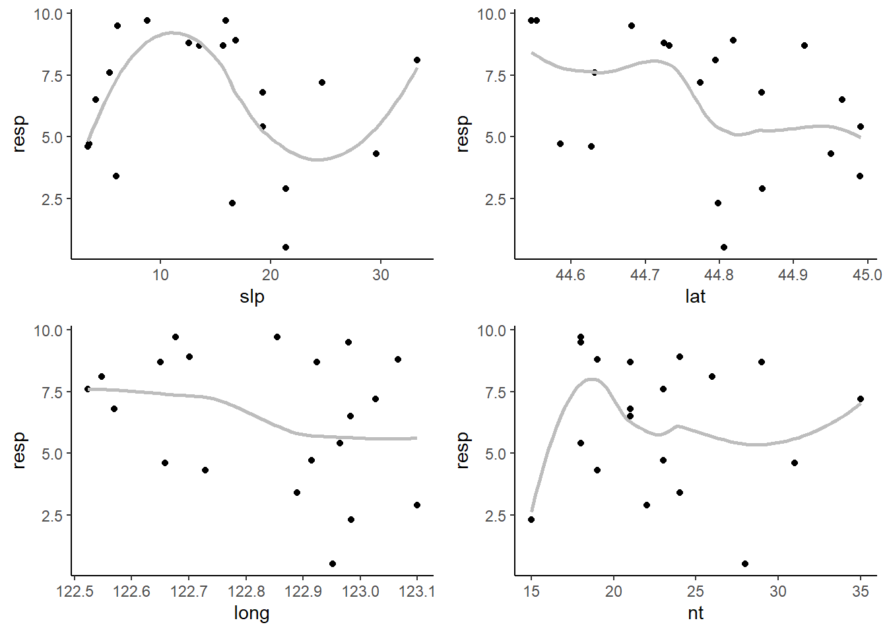
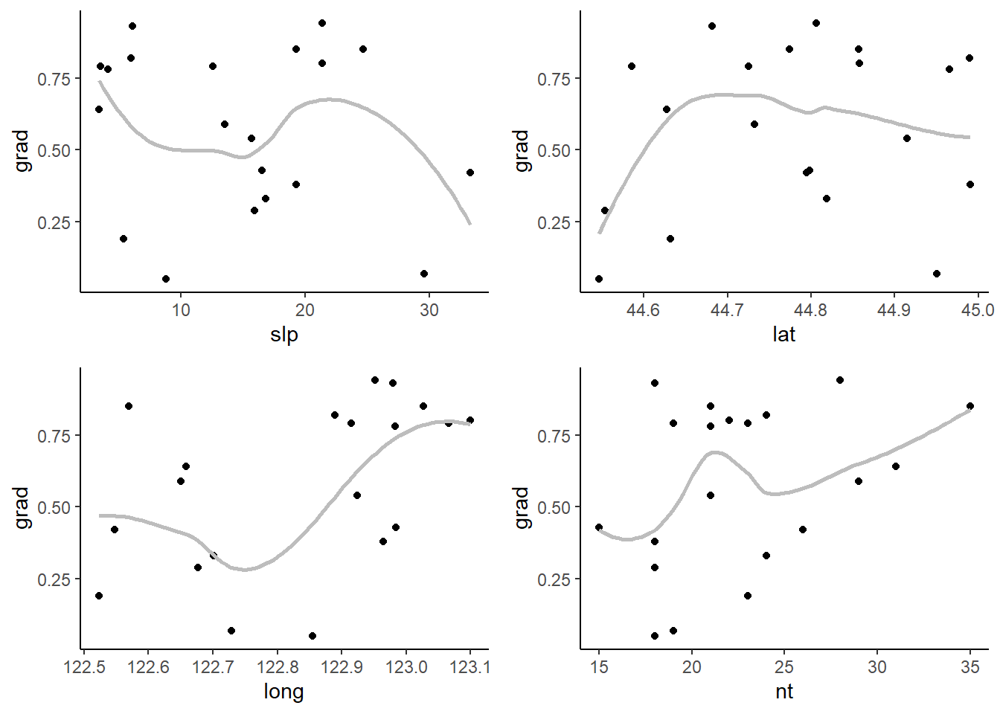

library(ggplot2)
library(purrr)
library(cowplot)Functional Programming with Purrr
123
Second Tag
This post will introduce you to how to use purrr pacakge to automate task in R
Introduction
When you have a lot of variables and need to make multiple exploratory plots it’s usually worthwhile to automate the process in R instead of manually copying and pasting code for every plot, this thing happen to me a lot but when I read Hadley Wickham Advance R on functional programming, I knew that what I was doing was wrong. However, the coding approach needed to automate plots can look pretty daunting to a beginner R user. It can look so daunting, in fact, that it can appear easier to manually make the plots (like in Excel) rather than using R at all.
Unfortunately making plots manually can backfire. The efficiency of using a software program you already know is quickly out-weighed by being unable to easily reproduce the plots when needed. I know I invariably have to re-make even exploratory plots, and it’d be a bummer if I had to remake them all manually rather than re-running some code.
So while I often assure students working under time constraints that it is perfectly OK to use software they already know rather than spending the time to learn how to do something in R, making many plots is a special case. To get them started I will provide students who need to automate plotting in R some example code (with explanation).
This post is based on an example that involves plotting bivariate relationships between many continuous variables.
Load R packages
Load the necessary library
I’ll be plotting with ggplot2 and looping with purrr package. I’ll also be using package cowplot later to combine individual plots into one, but will use the package functions via my name space cowplot:: instead of loading the package.
The set-up
Here I’m going to make an example dataset with 3 response (y) variables and 4 explanatory (x) variables for plotting.
set.seed(16)
dat = data.frame(elev = round( runif(20, 100, 500), 1),
resp = round( runif(20, 0, 10), 1),
grad = round( runif(20, 0, 1), 2),
slp = round( runif(20, 0, 35),1),
lat = runif(20, 44.5, 45),
long = runif(20, 122.5, 123.1),
nt = rpois(20, lambda = 25) )
head(dat) elev resp grad slp lat long nt
1 373.2 9.7 0.05 8.8 44.54626 122.8547 18
2 197.6 8.1 0.42 33.3 44.79495 122.5471 26
3 280.0 5.4 0.38 19.3 44.99027 122.9645 18
4 191.8 4.3 0.07 29.6 44.95022 122.7290 19
5 445.4 2.3 0.43 16.5 44.79784 122.9836 15
6 224.5 6.5 0.78 4.1 44.96576 122.9836 21The goal is to make scatter plots for every response variable vs every explanatory variable. I’ve deemed the first three variables in the data set to be the response variables (elev, resp, grad). The plan is to loop through the variables and make the desired plots. I’m going to use vectors of the variable names for this, one vector for the response variables and one for the explanatory variables. If all of your response or explanatory variables share some unique pattern in the variable names there are some clever ways to pull out the names with some of the select helper functions in dplyr::select(). My variable names are all unique. My options are to either write the vectors out manually or pull the names out by index. I’ll do the latter since the different types of variables are grouped together.
Set the names
response = names(dat)[1:3]
expl = names(dat)[4:7]When I know I’m going to be looping through character vectors I like to use named vectors. This helps me keep track of things in the output. The set_names() function in purrr is super handy for naming character vectors, since it can use the values of the vector as names (i.e., the vector will be named by itself). (I don’t recommend trying this with lists of data.frames like I have in the past, though, since it turns out that naming a data.frame with a data.frame isn’t so useful.)
response = set_names(response)
response elev resp grad
"elev" "resp" "grad" expl = set_names(expl)
expl slp lat long nt
"slp" "lat" "long" "nt" Create a plotting function
Since I’m going to make a bunch of plots that will all have the same basic form, I will make a plotting function. I am going to make a function where only the x and y variables can vary (so are arguments to the function). Since I’m making a function to plot variables from a single data set I’m going to hard-code the data set into the function. If you have multiple data sets or you are making a function for use across projects you’ll probably want to add the data set as a function argument. My functions inputs are based on the variable names, so I need to pass strings into the ggplot2 functions. Strings cannot be used directly in aes(), but can be used with the .data pronoun. I’m making pretty basic graphs since these are exploratory plots, not publication-ready plots. I will make a scatter plot and add locally weighted regression (loess) lines via geom_smooth(). I use such lines with great caution, as it can be easy to get too attached any pattern the loess line shows.
scatter_fun = function(x, y) {
ggplot(data=dat, aes(x = .data[[x]], y = .data[[y]])) +
geom_point() +
geom_smooth(method = "loess",
se = FALSE,
color = "grey74") + theme(
panel.grid.major = element_blank(),
panel.grid.minor = element_blank(),
panel.background = element_blank(),
axis.line = element_line()
)
}Here’s an example of the function output, passing in x and y as strings.
scatter_fun(x = "lat", y = "elev")
Looping through one vector of variables
One way to make all the plots I want is to loop through each explanatory variable for a fixed response variable. With this approach I would need a separate loop for each response variable.
Here I will use the map function from purrr package for looping.
I pass each explanatory variable to the first argument in scatter_fun() and I fix the second argument to “elev”. I use the formula coding in map() and so refer to the element of the explanatory vector via .x within scatter_fun().
elev_plots = map(.x = expl, .f = ~scatter_fun(x = .x, y = "elev") )The output is a list of 4 plots (since there are 4 explanatory variables). You’ll notice that each element of the list has the variable name associated with it. This is why I used set_names() earlier, since this is convenient for printing the plots and, you’ll see later, is convenient when saving the plots in files with understandable names.
elev_plots$slp
$lat
$long
$nt
Looping through both vectors
For only a few response variables we could easily copy and paste the code above, changing the hard-coded response variable each time. This process can get burdensome if there are a lot of response variables, though. Using a nested loop is another option which involve looping through both vectors of variables to make all the plots at once. Because we want a plot for each combination of variables, this is a job for a nested loop. This means one map() loop will be nested inside another. I will refer to the first map() loop as the outer loop and the second one as the inner loop. I’m going to run through the response variables in the outer loop and the explanatory variables in the inner loop. That way I can graph all of the explanatory variables for each response variable before moving on to the next response variable. This puts the output, a nested list, in a logical order. A nested loop involves more complicated code. It took some effort for me to wrap my head around how to refer to the list element from the outer loop within the inner loop when using the map() formula coding with the tilde (~). I found the answers/comments to this question on Stack Overflow to be helpful. Since my scatter plot function is so simple I ended up using formula coding for the outer loop and the function as in the inner loop. The inner list elements are fed to the first argument of scatter_fun() by default, which works out great since the first argument is the x variable and the inner loop loops through the explanatory variables. The .x then refers to the outer list elements (the response variable names), and is passed to the y argument of the function in the inner loop.
all_plots = map(.x = response,
.f=~ map(.x = expl, .f = scatter_fun, y = .x))To be honest, I think it is fairly hard to follow what the above code is doing. And I’ve found it difficult to use such an approach if adding additional nested loops. At the end of the day, using anonymous functions involves more code but the results may be easier to understand. Well, as easy to follow as nested loops ever are. Here’s the same plots using anonymous functions in each map() loop.
all_plots2 = map(response, function(resp) {
map(expl, function(expl) {
scatter_fun(x = expl, y = resp)
})
})The output is a list of lists. Each sub-list contains all the plots for a single response variable. Because I set the names for both vectors of variable names, the inner and outer lists both have names. These names can be used to pull out individual plots. For example, if I want to see all the plots for the grad response variable I can print that sub-list by name. (I’m going to display only two of four grad plots here to save space.)
all_plots$grad[1:2]$slp
$lat
If I want to print a single plot, I can first extract one of the sub-lists using an outer list name and then extract the individual plot via an inner list name.
all_plots$grad$long
I find the names convenient, but you can also extract plots via position. Here’s the same graph, the third element of the third list.
all_plots[[3]][[3]]
Combining variables for a single loop
Since nested loops can be complicated, another option is to create all combinations of the two input vectors and then loop through the vectors in a single loop. This can be done, for example, using tidyr::expand_grid(). The main thing I like about tidyr::expand_grid() over expand.grid() from base R is the order of the output. Both put the results into a data set (data.frame or tibble). Here’s how that would look, putting the response variables first to match the output order above. I’m using tidyr version 1.1.4 here.
resp_expl <- tidyr::expand_grid(expl,response)
resp_expl# A tibble: 12 × 2
expl response
<chr> <chr>
1 slp elev
2 slp resp
3 slp grad
4 lat elev
5 lat resp
6 lat grad
7 long elev
8 long resp
9 long grad
10 nt elev
11 nt resp
12 nt grad I can now use pmap() from purrr to loop through the rows of this tibble. I have to be careful with my argument order, though, since I have the y variable first in the tibble but it is the second argument in my function.
allplots2 = pmap(.l = resp_expl, .f = ~scatter_fun(x = .x, y = .y) )I’m not going to print them here, but one minor downside of this approach is that only the first variable name is carried along to the output list. If I wanted to save these plots separately and use both the response and explanatory variable in the file name I’d need to create the file names based on resp_expl. I won’t show this in the next section on saving plots, so here is a quick example of creating basic file names based on both variables.
allplots2_names = pmap(resp_expl, ~ paste0(.x, "_", .y, ".png"))
allplots2_names[1:2]$slp
[1] "slp_elev.png"
$slp
[1] "slp_resp.png"Saving the plots
Once all the graphs are made we can look at them in R by printing the list or parts of the list as above. But if you want to peruse them at your leisure later or send them to a collaborator you’ll want to save them outside of R.
This next section is dedicated to exploring some of the ways you can do this.
Saving all plots to one PDF
If you want to save every plot as a separate page in a PDF, you can do so with the pdf() function. The code below shows an example of how this works. First, a graphics device to save the plots into is created and given a name via pdf(). Then all the plots are put into that device. Finally, the device is turned off with dev.off(). The last step is important, as you can’t open the file until the device is turned off.
This is a pretty coarse way to save everything, but it allows you to easily page through all the plots. I’ve used this method when I had many exploratory plots for a single response variable that I wanted to share with collaborators.
In this example code I save the file, which I name all_scatterplots.pdf, into my current working directory.
pdf("all_scatterplots.pdf")Saving groups of plots together
Another option is to save each group of plots in a separate document. This might make sense in a case like this where there are a set of plots for each response variable and we might want a separate file for each set. To save each sub-list separately we’ll need to loop through all_plots and save the plots for each response variable into a separate file. The list names can be used in the file names to keep the output organized. The functions in purrr that start with i are special functions that loop through a list and the names of that list simultaneously. This is useful here where we want to use the list names to identify the output files while we save them. The walk() function is part of the map family, to be used when you want a function for its side effect instead of for a return value. Saving plots is a classic example of when we want walk() instead of map(). Combining the i and the walk gives us the iwalk() function. In the formula interface, .x refers to the list elements and .y refers to the names of the list. You can see I create the plot file names using the list name combined with “scatter plots.pdf”, using _ as the separator. The code below makes three files, one for each response variable, with four plots each. The files are named “elev_scatter plots.pdf”, “resp_scatter plots.pdf”, and “grad_scatter plots.pdf”.
iwalk(all_plots, ~ {
pdf(paste0(.y, "_scatterplots.pdf"))
})Saving all plots separately
All plots can be saved separately instead of combined in a single document. This might be necessary if you want to insert the plots into some larger document later. We’ll want to use the names of both the outer and inner lists to appropriately identify each plot we save. I decided to do this by looping through the all_plots list and the names of the list via imap() to make the file names in a separate step. This time I’m going to save these as PNG files so use .png at the end of the file name. The result is a list of lists, so I flatten this into a single list via flatten(). If I were to use flatten() earlier in the process I’d lose the names of the outer list. This process of combining names prior to flattening should be simplified once the proposed flatten_names() function is added to purrr.
plotnames = imap(all_plots, ~ paste0(.y, "_", names(.x), ".png")) %>%
flatten()Once the file names are created I can loop through all the file names and plots simultaneously with walk2() and save things via ggsave(). The height and width of each output file can be set as needed in ggsave(). You can see I flattened the nested list of plots into a single list to use in walk2().
walk2(plotnames,
flatten(all_plots),
~ ggsave(
filename = .x,
plot = .y,
height = 7,
width = 7
))Combining plots
Another way to get a set of plots together is to combine them into one plot. How useful this is will depend on how many plots you have per set. This option is a lot like faceting, except we didn’t reshape our data set to allow the use faceting. I like the package cowplot function plot_grid() for quickly combining multiple plots into one. A list of plots can be passed via the plotlist argument.
Here’s what that looks like for the first response variable, elev.
cowplot::plot_grid(plotlist = all_plots[[1]])
We can use a loop to combine the plots for each response variable sub-list. The result could then be saved using any of the approaches shown above. If you have many subplots per combined plot you likely will want to save the plots at a larger size so the individual plots can be clearly seen.
response_plots = map(all_plots, ~ cowplot::plot_grid(plotlist = .x))
response_plots$elev
$resp
$grad
To learn more on functional programming in R you can look at Jenny Bryan blog post on functional programming here